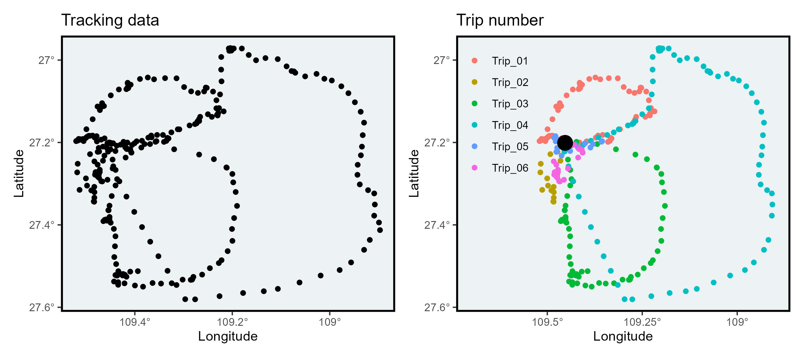

#devtools::install_github("MiriamLL/sula")
library(sula)Identify events
R
ggplot2
English
Y2024
tracking
Assign a number to each event.
Intro
This post shows an option to assign a trip number to locations of animals.
This same method could be use to identify events on spatial data.
Data
For the exercises, test data is from Masked boobies.
This data frame contains data from 10 individuals.
unique(sula::GPS_raw$IDs)Using functions from the package tidyverse, one of the individuals can be selected.
library(tidyverse)GPS_one<-GPS_raw %>% filter(IDs=='GPS08')The original data can be checked using functions from the package ggplot2.
library(ggplot2)In the plot all locations are presented, but events can not be identify yet.
Plot_original<-ggplot(GPS_one, aes(x=Longitude, y=Latitude)) +
geom_point()+
scale_x_continuous(labels = function(x) paste0(-x, '\u00B0')) +
scale_y_continuous(labels = function(x) paste0(-x, '\u00B0')) +
ggtitle('Tracking data')+xlab('Longitude')+ylab('Latitude')+
theme_bw()+
theme(
legend.position='none',
panel.background = element_rect(fill = '#edf2f4'),
panel.grid.major = element_blank(),
panel.grid.minor = element_blank(),
panel.border = element_rect(colour = "black", fill=NA, size=1.5))
Plot_originalRemove central locations
An event would be defined as each time the animal leaves its central location.
The information about the central location is needed.
Central_location<-data.frame(Longitude=-109.4531, Latitude=-27.20097)The locations are to be transform into spatial data.
GPS_spatial <- GPS_one
sp::coordinates(GPS_spatial) <- ~Longitude + Latitude
sp::proj4string(GPS_spatial) = sp::CRS("+init=epsg:4326")
GPS_spatial<-sf::st_as_sf(GPS_spatial)The buffer function is explained in the previous post.
The function uses the central location to create a buffer.
A number “1” shows that the location is inside the 1 km buffer and an NA that is outside the buffer.
The information is added on a column in the data frame.
create_buffer<-function(central_point=central_point, buffer_km=buffer_km){
central_spatial<- sp::SpatialPoints(cbind(central_point$Longitude,central_point$Latitude))
sp::proj4string(central_spatial)= sp::CRS("+init=epsg:4326")
central_spatial <- sp::spTransform(central_spatial, sp::CRS("+init=epsg:4326"))
central_spatial<-sf::st_as_sf(central_spatial)
buffer_dist<-buffer_km*1000
central_buffer<-sf::st_buffer(central_spatial, buffer_dist)
return(central_buffer)
}
This_buffer<-create_buffer(central_point=Central_location,buffer_km=1)
GPS_over<-sapply(sf::st_intersects(GPS_spatial,This_buffer), function(z) if (length(z)==0) NA_integer_ else z[1])
GPS_one$trip <- as.numeric(GPS_over)The NAs (when the animal is outside the buffer) can be replaced for a 0.
This is not strictly necessary but facilitates the interpretation of the column.
GPS_one$trip[is.na(GPS_one$trip)] <- 0Alternatively, text can be added.
GPS_one$trip <- gsub("1", "At_central_locations", GPS_one$trip)
GPS_one$trip <- gsub("0", "At_trip", GPS_one$trip)Assign trip number
To assign the trip number, the first step was adding a new column with a sequential number.
GPS_one$sequential_number<-as.integer(paste(seq(1:as.numeric(nrow(GPS_one)))))Afterwards, all the locations inside the central locations were removed.
GPS_trips<-subset(GPS_one, GPS_one$trip == "At_trip")By removing the locations inside the central locations, we end up with gaps in the sequence number.
Here, I added a number of event everytime that the sequence was broken.
GPS_trips$trip_number <- (cumsum(c(1L, diff(GPS_trips$sequential_number)) != 1L))+ 1In case there might be more than ten trips, adding more zeros using the function str_pad might be useful.
GPS_trips$trip_number <- stringr::str_pad(GPS_trips$trip_number , 2, pad = "0")For easier interpretation, text can be added.
GPS_trips$trip_number<-paste0("Trip_", GPS_trips$trip_number )Using the function unique the number of events (or trips) can be checked.
unique(GPS_trips$trip_number)Plot
The different events can now be easily observed by adding the argument color=trip_number in the plot.
Plot_trips<-ggplot(GPS_trips, aes(x=Longitude, y=Latitude, color=trip_number)) +
geom_point()+
geom_point(data=Central_location,aes(x = Longitude,y= Latitude),
color="black", fill="black",shape=16,size=5,stroke=1.5)+
theme_bw()+
scale_x_continuous(limits=c(-109.7,-108.9),labels = function(x) paste0(-x, '\u00B0')) +
scale_y_continuous(labels = function(x) paste0(-x, '\u00B0')) +
ggtitle('Trip number')+xlab('Longitude')+ylab('Latitude')+labs(color='')+
theme(
panel.background = element_rect(fill = '#edf2f4'),
panel.grid.major = element_blank(),
panel.grid.minor = element_blank(),
panel.border = element_rect(colour = "black", fill=NA, size=1.5),
legend.background = element_rect(colour = "transparent", fill = "transparent"),
legend.position = c(0.12,0.75))
Plot_trips
Further reading
Functions count_trips from the package sula can be used to run loops.